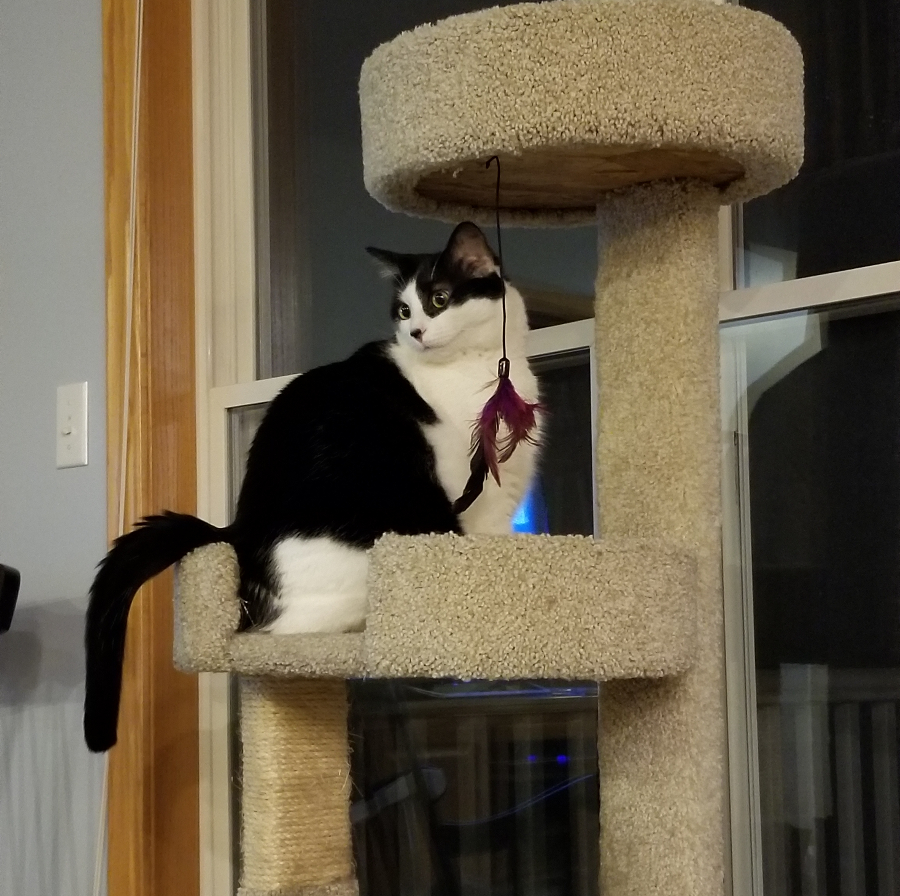
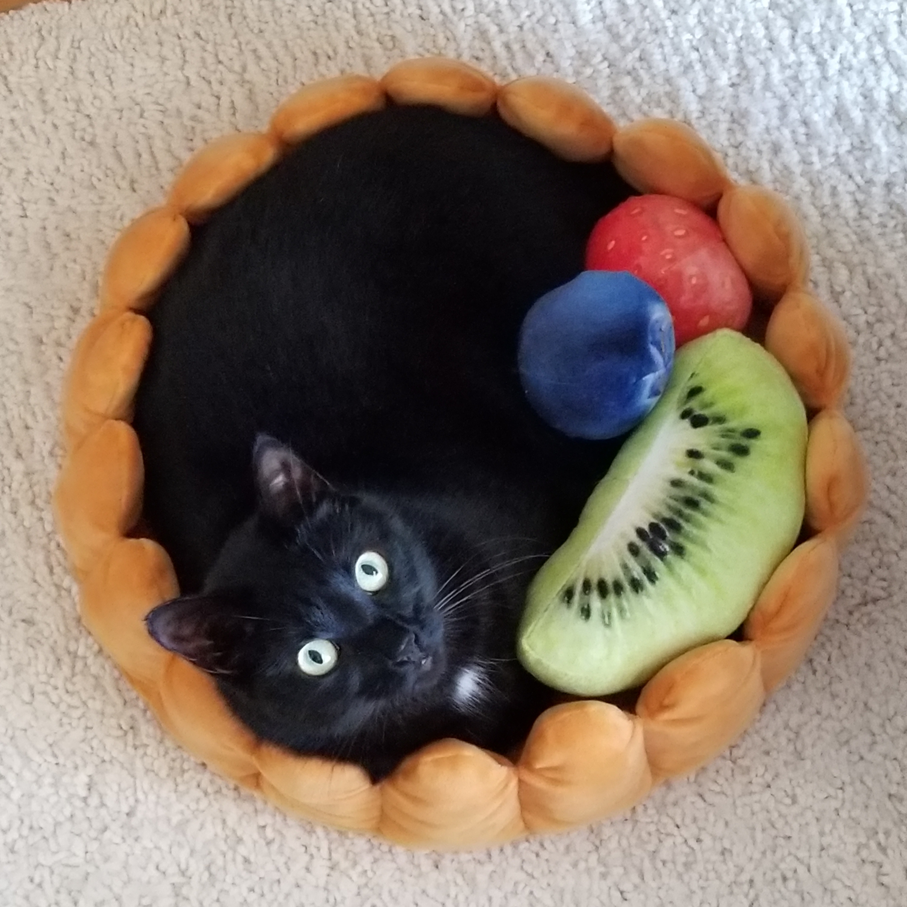
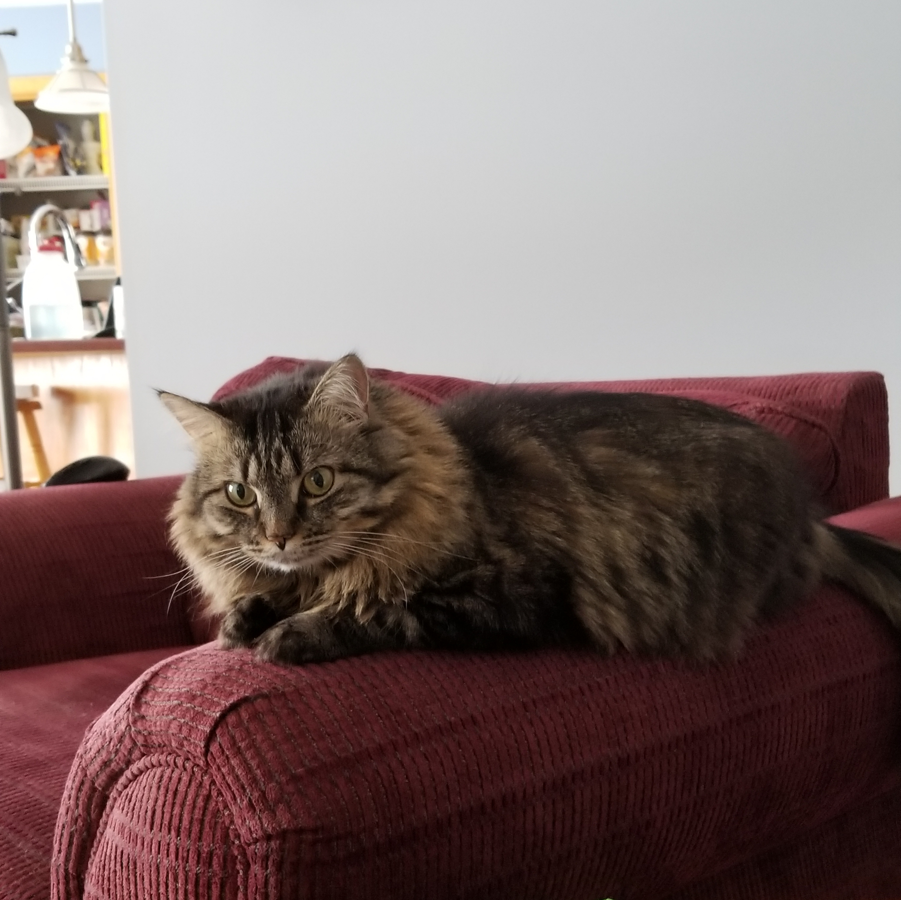

Hey there, I'm Debbie. I'm a psychology student with a focus in human factors and I'm taking this course to fulfill the requirements for my focus. I haven't coded anything in about five years, and I have never used HTML before, so I guess we'll see how this goes. I don't have anything in particular to share here just yet, so in the meantime, here are my cats.



For more pictures and videos of my cats, here is a link to my intstagram.